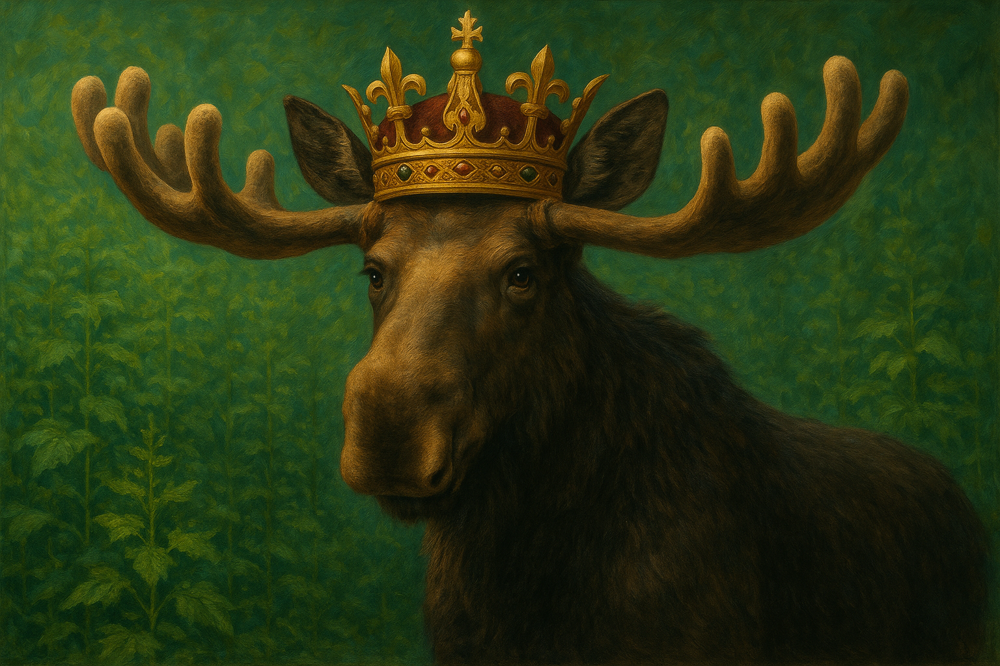

Emil ist ein junger Elch, der im Sommer 2025 aus Tschechien über die Grenze nach Österreich wanderte.
Hier siehst du seine dokumentierten Sichtungen als Route auf der Karte – inkl. verlinkter Social-Posts.
Quelle: WikipediaStand: Aug 2025

Pfadlänge (Luftlinie)–
Anzahl Knotenpunkte–
Sichtungen
Diese Website verwendet Instagram-Embeds. Instagram kann Cookies setzen, um Inhalte (Reels/Posts)
einzubetten. Bitte stimme zu, damit die Beiträge direkt hier abgespielt werden können.
Aktuelle News
Quellen: ORF, Heute, Süddeutsche, MeinBezirk u. a.